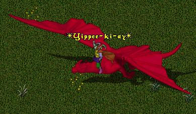
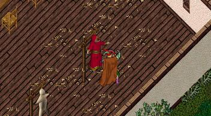
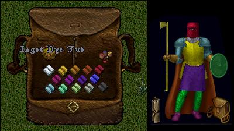
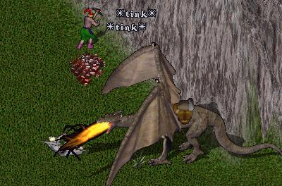
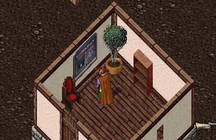
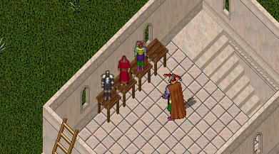
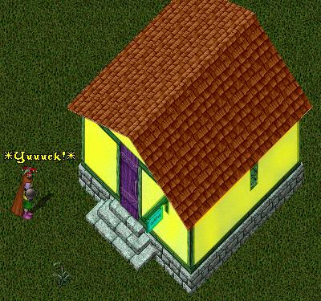
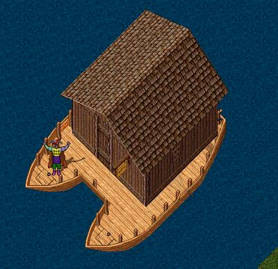
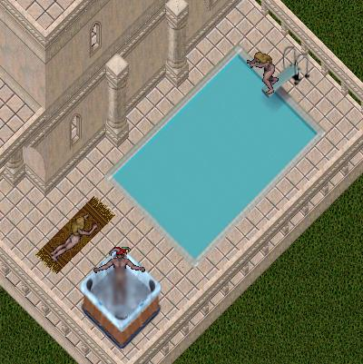
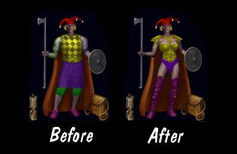

Forget Ethereal Horses, Llamas and Ostards! How bout having one of these babies? Not only gets you around Britannia in style but does away with the need to have a boat. Allowing people to log off seated atop their dragon would also take some of the strain off the overcrowded stables.

Useable by any player with over 1 year account status. For most Veteran players, training dummies are something they haven't needed for years. This would extend the usefulness of the training dummies by giving players somewhere to take out their frustrations paging for help as they see they are #128,277,289 in the queue. Also maybe make it so that veteran players could use them to quickly switch gm melee skills as "balancing" changes the advantage of one skill over another. Set one skill up, one skill down, and in about a half hour *poof*, instant gm!

Being a blacksmith is not that easy these days. With the price of ingots skyrocketing through the roof and having to maintain stocks of every different color to satisfy player whims is a pain. Getting rid of colored ore and substituting an Ingot Dye Tub would allow veteran smiths to maintain a simple one color inventory and dye armor on demand.

People keep saying how empty Felucca is. Having a Pack Wyrm would allow veteran miners to safely mine in Felucca without having to worry about keeping an eye out for pesky PKs and thieves. Also make it so a Pack Wyrm could carry 1000 stones of ore to cut down on the number of trips back and forth from the forge.

This handy in-house, personal Automated Teller Machine would allow banking at home and also cut down on those repeated recall trips back and forth from the bank to offload gold from your vendors.

I have seen a lot of people complaining about "Three Years and all I get is a Cow Statue!". Well how about a genuine Lord British Statue, or maybe a GM statue, or even better, a lot of veteran players have fairly inflated egos about their long time characters so how about a statue of a players very own character, dressed in his/her favorite outfit?

Quite a few people have suggested being able to paint houses as being a great veteran reward, but I am not so sure. I mean, it is bad enough already seeing log cabins beside tudor villas beside marble patios houses without adding the insult of color schemes that look like they came straight out of a Little Tykes catalog.

Now this one really has merit. With buildable land all used up, opening up the huge, mostly wasted water areas would allow tons of new housing opportunities. Not only that but fishermen with few fighting skills could fish with confidence knowing that if a nasty sea serpent or elemental showed up all you have to do is duck in the house and lock the door.

Face it, the large patio on those marble houses is for the most part, waste space. What could be better after a hard day in the dungeons wearing all that heavy, uncomfortable armor, than to be able to kick back in the hot tub or go for a quick dip in the pool?

And finally, the #1 veteran player reward. Why stop at neon hair and beard dyes, name change deeds, etc.? I mean, playing the same character for three years can be kind of boring. We all know that half the female characters in UO are really men anyway (and vice versa). Maybe make the deeds reusable for players going through a gender identity crisis.